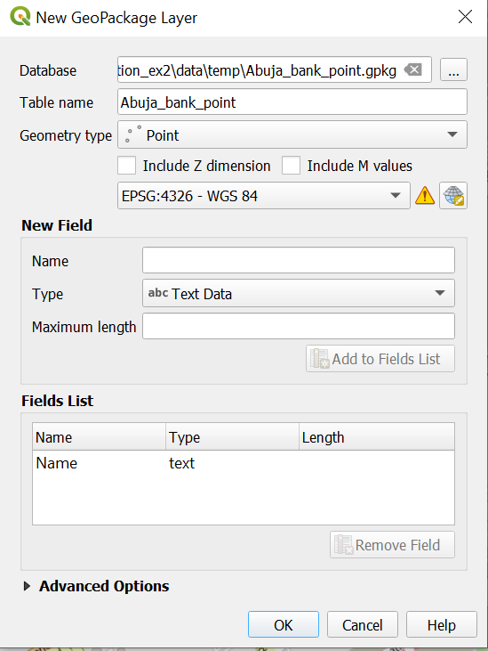
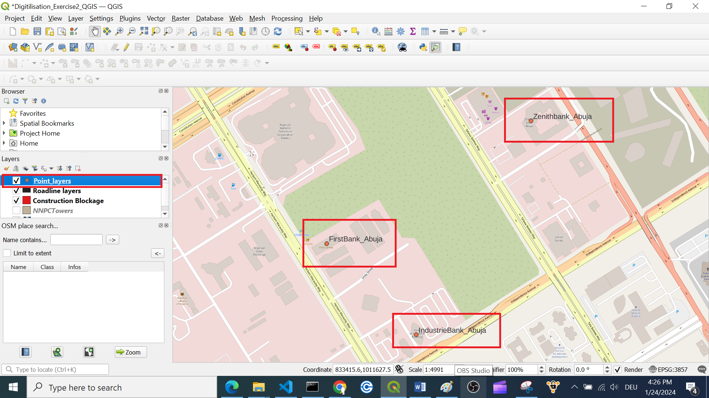
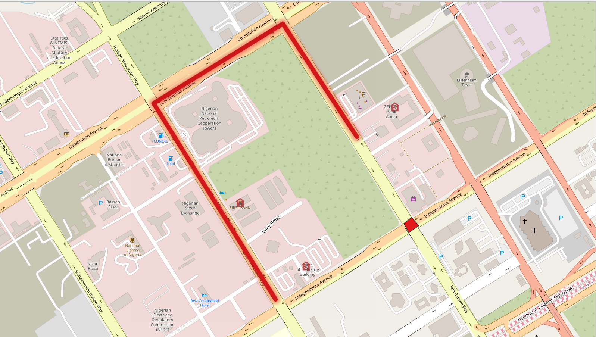

Exercise 1 (Digitisation): Access to Financial Institutions#
Characteristics of the exercise#
Aim of the exercise:
In this exercise, you will learn how to digitise points, lines, and polygons of features in settlements by creating new datasets.
Type of trainings exercise:
This exercise can be used in online and presence training.
It can be done as a follow-along exercise or individually as a self-study.
These skills are relevant for:
Data collection and digitisation
Fixing spatial information
Estimated time demand for the exercise:
The exercise takes around 2 hour to complete, depending on the number of participants and their familiarity with computer systems.
Relevant Wiki articles:
Instructions for the trainers#
A note on plugins
class: attention
This exercise makes use of a plugin which is not installed by default: OSM Place Search.Make sure you take Furthermore, instead of using XYZ-tiles for the basemap, you can decide to use the plugin “QuickMapServices”.
Trainers Corner
Prepare the training
Take the time to familiarise yourself with the exercise and the provided material.
Prepare a white-board. It can be either a physical whiteboard, a flip-chart, or a digital whiteboard (e.g. Miro board) where the participants can add their findings and questions.
Before starting the exercise, make sure everybody has installed QGIS and has downloaded and unzipped the data folder.
Check out How to do trainings? for some general tips on how to conduct a training.
Conduct the training
Introduction:
Introduce the idea and aim of the exercise.
Provide the download link and make sure everybody has unzipped the folder before beginning the tasks.
Follow-along:
Show and explain each step yourself at least twice and slow enough so everybody can see what you are doing, and follow along in their own QGIS-project.
Make sure that everybody is following along and doing the steps themselves by periodically asking if anybody needs help or if everybody is still following.
Be open and patient to every question or problem that might come up. Your participants are essentially multitasking by paying attention to your instructions and orienting themselves in their own QGIS-project.
Wrap up:
Leave time for any issues or questions concerning the tasks at the end of the exercise.
Leave some time for open questions.
Attention
Try to always use the standard folder structure. You can find a template here.
Background: Cash crunch in Abuja#
In 2022 there was a cash shortage in Nigeria. Small businesses heavily rely on cash transactions and cash-based services. This lead to a cash crunch in Abuja, the capital city of Nigeria. No cash article in Abuja.
Task: Map the banks#
Our goal is to create a point layers at the three Banks close to each other in the Central Business District (CBD) of Abuja in Nigeria. This is to let people easily identify the banks in the CBD of Abuja for their transaction purposes.
To this end, we will visualize the digitization of the First Bank, Bank of Industry Building, and Zenith Bank Abuja.
Add a basemap#
Add the OSM as a base map. To add the OSM as a base map click on
Layer->Add Layer->Add XYZ Layer…. ChooseOpenStreetMapand clickAdd. Arrange your layer in theLayer Panelso the OSM is at the bottom (Wiki Video)
Tip
You cannot interact with a base map!
To add the plugin
OSM Place Search, click onPlugins->Manage and Install Plugins…->Alland search forOSM Place Search. Once you have found it, click on it and clickInstall Plugin. You can open theOSM Place Search Panellike every other panel by clicking onView->Panelsand checkingOSM Place Search Panel(Wiki Video).In the
OSM place searchpanel, search “Abuja Central Business District” and choose Abuja Municipality Area Council, City. Zoom to the Central Business District. We want to digitise the location of banks in this region. For this, we will need to create a new point layer:Click on
Layer–>Create Layer->New GeoPackage Layer(Wiki Video) .
Under
Databaseclick on and navigate to
and navigate to tempfolder in your project folder. Give the new dataset the name “Abuja_bank_point”. ClickSave.Under
Geometry type: SelectPoint.Select the coordinate reference system (CRS) “EPSG:4326-WGS 84”. By default, the QGIS selects the project CRS.
Under
New Fieldyou can add columns to the new layer. Add the column “Name”.Name= “Name”Type: SelectText (string)Click on
Add to Fields List to add the new column to the
to add the new column to the Fields List.Click
OK.
Your new layer will appear in the
Layer Panel.
Adding more information
class: tip
You can digitise even more information by adding more columns. For example, you can add a column for amenity to indicate the type of amenity (bank). Try thinking about what kind of data you can add.
{kind=link}

Creating a new point layer.#
Now you can create a point for each of the three banks in the area wiki. Currently the new “Abuja_bank_point” is empty. To add features we can use the
Digitizing Toolbar. If you cannot see the toolbarView->Toolbarsand checkDigitizing Toolbar(Wiki Video).
Select the point layer “Abuja_bank_point” in the Layer panel. Navigate to the digitisation toolbar and click on
 . Now, the layer is in the editing mode.
. Now, the layer is in the editing mode.Search for banks on the map or use the OSMPlace search panel. Once you have found one, click on
 . Left-click on the feature you want to digitise.
. Left-click on the feature you want to digitise.Once you click, a window will appear “Abuja_bank_point”. Here you can add the name of the bank.
Repeat the same process for as many banks as you can find.
Once you are done with digitizing click on
 to save your edits.
to save your edits.Click again on
to end the editing mode.
This is what your result should look like.
{kind=link}

The digitised features could look like this.#
Mapping Road Blocks#
There is some reliable information that there is a roadblock due to construction at the junction of “Independent Avenue” and ‘“Tafawa Balewa Way”. To visualise this on our map we want to create a polygon of this roadblock. The Polygon should cover the entire junction.
To do that we need again a new layer. In this case a polygon layer. The creation is basically the same as for the point.
Click on
Layer–>Create Layer->New GeoPackage Layer(Wiki).Under
Databaseclick on and navigate to tempfolder. Give the new dataset the name “Abuja_roadbloc_polygon”. ClickSave.Geometry type: SelectPolygon.Select the coordinate reference system (CRS) “EPSG:4326-WGS 84”.
Under
New Fieldyou can add columns to the new layer. Add the column “Roadblock_type”.Name= “Roadblock_type”Type: SelectText (string)Click on
Add to Fields List to add the new column to the Fields List.Click
OK.
Your new layer will appear in the
Layer Panel.
To digitise this area, click on your new „Abuja_roadbloc_polygon“ layer (Wiki).
Clicking on
start edit modeand Add Feature:Capture Polygon |.
|.Draw geometries and enter
feature attributes, “Roadblock_type” = “Construction_site”.Save edits
, exit edit mode.
Map the connection routes#
A business man drove all the way from the North of Herbert Macauley Way in the Central Business District of Abuja to do transaction at the Bank of Industry on Monday morning. Unfortunately, he found that the network server of the bank is down and needed to proceed to the Zenith Bank as the only functioning Bank. He later discovered that there is a road blocked at the junction of independence avenue and Tafawa Balewa way due to road construction.
Create a road line layer that will allow him to get to Zenith Bank easily.
To do that we need again a new layer. In this case a line layer. The creation of that is nearly the same as for the point.
Click on
Layer–>Create Layer->New GeoPackage Layer(Wiki).Under
Databaseclick on and navigate to tempfolder. Give the new dataset the name “Abuja_bank_road_connection_line”. ClickSave.Geometry type: SelectLine.Select the coordinate reference system (CRS) “EPSG:4326-WGS 84”.
Under
New Fieldyou can add columns to the new layer. Add the column “Road_type”.Name= “Road_type”Click on
Add to Fields List to add the new column to the Fields List.Click
OK.Adding more information
class: tip
Again, by adding more fields, you can add more information. For example, you can add the type of road (e.g., paved, unpaved, highway, residential) or the speed limit, or the number of lanes. Try thinking about what information you could add, and which
Typewould you use? Keep in mind that you cannot perform calculations with string data.
Your new layer will appear in the
Layer Panel.
Select the line layer “Abuja_bank_road_connection_line” to add data to in the Layer panel Wiki.
Go to the digitisation toolbar and click on
. Now the layer is in the editing mode.Click on
 .
.To digitise line features, click along the line. When you are done, right-click on the last point of the line to finish the feature.
Once you click, a window will appear “Abuja_bank_road_connection_line- Feature Attribute”. Add the road typ which is “Secondary_road”.
Once you are done with digitisation, click on
to save your edits.Click again on
to end the editing mode.
{kind=link}

Your results could look something like this.#